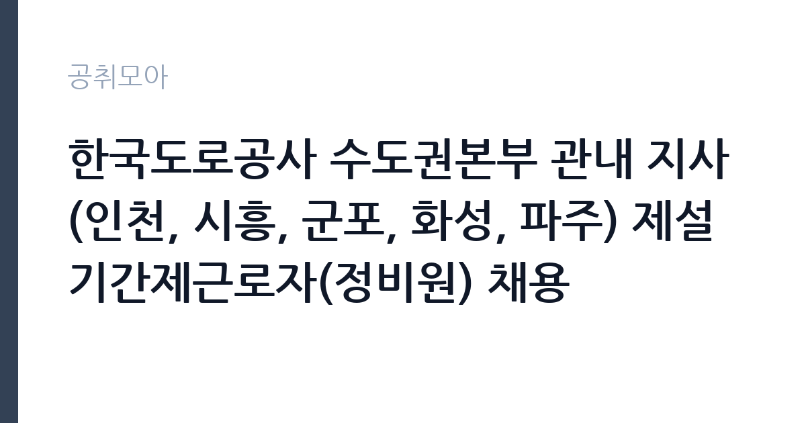

[공공기관] 한국도로공사 수도권본부 관내 지사(인천, 시흥, 군포, 화성, 파주) 제설 기간제근로자(정비원) 채용
한국도로공사 · 인천 · 마감 2026-11-04 (D-6) · 출처 잡알리오

한눈에 보는 모집 조건
| 기관 | 한국도로공사 |
|---|---|
| 공고명 | 한국도로공사 수도권본부 관내 지사(인천, 시흥, 군포, 화성, 파주) 제설 기간제근로자(정비원) 채용 |
| 고용형태 | 기간제 |
| 근무지 | 인천 |
| 게시일 | 2026-10-29 |
| 마감일 | 2026-11-04 (D-6) |
지원자격, 이렇게 읽으세요
- o 우리공사 기간제근로자관리예규 제6조의1 제2항의 결격사유가 없는 자(공고문 참고)
- o 해당 직무와 관련된 교육과정(학교 교육, 직업훈련 등)을 수료하거나 해당분야 3개월 이상 경험 소지자
- o 채용일(공고문 참조)로부터 근무 가능자
기간제 근로자는 근로계약 기간이 정해진 신분입니다. 계약 기간과 갱신 가능 여부가 근로계약서에 명시되며 기간 만료 시 근로관계가 종료됩니다. 결원 보충이나 특정 사업 기간에 맞춰 채용되는 경우가 많아 업무 범위가 명확합니다. 이번 공고는 한국도로공사가 직접 진행하는 자체 전형입니다. 제설 인력은 학력·성별·연령 제한을 두지 않는 대신, 실제 운전 가능 여부와 결격사유를 확인합니다. 운전원은 1종 대형면허 취득 후 운전경력 1년 이상을 요구하는 경우가 많고, 면허가 취소·정지 상태이면 채용이 취소됩니다. 도로관리원과 정비원은 관련 교육 이수나 3개월 이상 경력을 요구하기도 합니다. 근무 시작일부터 현장 근무가 가능해야 하며, 근무 기간은 제설대책기간에 맞춰 정해집니다. 응시 자격 판단이 애매하면 접수 전에 채용 담당 부서로 문의하는 편이 안전합니다. 우대 사항에 해당하면 증빙을 반드시 첨부해야 하며, 누락하면 가점 없이 평가됩니다. 공고문의 응시자격 표를 보면 자격 항목이 여러 줄로 나뉘어 있으므로, 각 줄을 하나씩 체크하며 본인 해당 여부를 표시해 두면 누락을 줄일 수 있습니다. 이 공고 원문에 적힌 응시 조건 문구는 'o 연령, 성별, 학력 제한 없음' / 'o 해당 직무와 관련된 교육과정(학교 교육, 직업훈련 등)을 수료하거나 해당분야 3개월 이상 경험 소지자'입니다. 문구를 그대로 읽고 본인 해당 여부를 하나씩 표시해 두면 서류 단계에서 탈락하는 일을 줄일 수 있습니다.
이 공고의 포인트
이 건은 한국도로공사가 같은 시기에 낸 3개 모집분야 가운데 제설·도로 유지관리 직무입니다. 다른 직무 공고와 요건이 다르므로 지원 전에 모집분야 표를 대조해야 합니다. 이 공고의 첫 번째 포인트는 고용 형태입니다. 계약 기간이 정해져 있어 근무 종료 시점이 명확합니다. 그만큼 짧은 기간에 어떤 실적을 남길지가 중요해집니다. 두 번째는 업무 범위가 명확하다는 점입니다. 제설·도로 유지관리 직무로 채용되므로 배치 이후 담당 업무가 크게 흔들리지 않습니다. 세 번째는 근무지입니다. 인천 지역 근무로 접근성은 좋지만 그만큼 지원자가 몰리는 지역이므로 경쟁률을 넉넉히 잡아야 합니다. 근무 조건이 공고문에 구체적으로 적혀 있어 지원 전에 판단할 정보가 충분합니다. 같은 직무 공고 중에서는 접수 마감이 가장 빨라 일정을 앞당겨 잡아야 합니다. 선발 인원은 공고문에 명시되어 있으니 모집분야 항목을 함께 확인하십시오.
전형은 어떻게 진행되나
1차 서류, 2차 면접의 2단계로 진행되는 구성이 일반적입니다. 서류에서는 자격 요건과 경력 증빙을 확인하고, 면접에서는 실제 업무 수행 능력과 조직 적응을 봅니다. 직무에 따라 필기시험이나 실기, 컴퓨터 활용 시험이 추가되기도 하므로 공고문의 전형표를 먼저 확인하십시오. 단계별로 합격자만 다음 전형에 응시할 수 있고, 단계마다 응시 자격 확인 서류를 다시 제출해야 하는 경우가 있습니다. 최종합격자 발표 후에는 신원조회와 채용 신체검사가 남아 있습니다. 서류 단계에서 요건을 충족하지 못하면 이후 전형을 준비할 기회가 없으므로, 제출 전 요건 대조를 한 번 더 하는 것이 좋습니다.
원문에서 확인한 전형 방식
o 연령, 성별, 학력 제한 없음 o 우리공사 기간제근로자관리예규 제6조의1 제2항의 결격사유가 없는 자(공고문 참고) * 타공공기관에서 부정한 방법으로 채용된 사실이 적발되어 채용이 취소된 자는 응시 불가 o 해당 직무와 관련된 교육과정(학교 교육, 직업훈련 등)을 수료하거나 해당분야 3개월 이상 경험 소지자 * 출신학교 대학교 졸업여부 등 학력관련정보 기입금지 o 채용일(공고문 참조)로부터 근무 가능자
이런 분께 추천해요
- 1종 대형면허 등 요구 면허를 보유하고 실제 운행이 가능한 분
- 동절기 야간·교대 근무와 비상 출동에 응할 수 있는 분
- 제설 장비나 도로 유지관리 경험이 있는 분
지원 전 체크리스트
- 응시자격 요건과 경력 기준을 충족하는가 — 경력은 증명서로 입증해야 합니다
- 계약 기간과 근무 시작일·종료일을 확인했는가
- 제출서류 목록을 모두 준비했는가 — 누락 시 서류 단계에서 탈락합니다
- 접수 마감 2026-11-04 이전에 접수 방식을 확인해 제출했는가
모집 일정과 제출 타이밍
공고 게시일은 2026-10-29, 접수 마감은 2026-11-04입니다. 준비 기간은 약 6일로 서류 준비와 자격 증빙을 함께 처리하기에는 넉넉하지 않은 편입니다. 첫 이틀 안에 공고문과 첨부 서식을 내려받아 요건을 확인하고 남은 기간에 증빙 서류를 발급받는 일정이 현실적입니다. 면접은 서류 합격자 발표 후 짧은 간격으로 진행되는 경우가 많으므로 서류 제출과 동시에 면접 준비를 시작하는 편이 안전합니다. 마감일에는 접수 시스템이 몰리므로 하루 전까지 제출을 마치는 것이 좋습니다. 공휴일이 끼어 있으면 증명서 발급이 늦어질 수 있으니 발급 일정을 앞당기십시오.
직무 이해하기: 공공기관
공공기관은 도로와 수자원, 농지, 부동산 시장 관리 같은 공적 기능을 수행합니다. 현장 사업소는 도로와 시설 유지 관리, 조경과 환경 관리 업무를 직접 수행하며 계절 사업에 따라 기간제 인력을 채용합니다. 제설 기간제 근무는 동절기 도로 결빙과 적설에 대응해 고속도로 통행을 확보하는 일입니다. 기상 특보가 나오면 출동 대기조로 편성되어 제설 장비와 자재를 점검하고, 눈이 내리면 제설차나 살포기를 운용해 염화칼슘을 뿌리고 도로를 정리합니다. 근무는 제설대책기간에 맞춰 24시간 교대·비상 대기 형태로 운영되며, 폭설 시에는 연속 작업이 이어집니다. 평시에는 제설 장비 정비와 자재 비축, 도로 시설물 점검 업무를 맡습니다. 한파와 야간 작업이 많아 방한 장비 착용과 안전 수칙 준수가 업무의 전제입니다. 이 직무는 담당 구역이 정해져 있어 근무지에 따라 실제 업무 환경이 달라집니다. 직무 교육은 입사 후 기관 자체 계획에 따라 진행되므로 사전 경험이 없어도 시작할 수 있습니다. 이 건의 근무 대상 지역·부서는 원문 기준 '인천, 시흥, 군포, 화성, 파주'입니다.
자기소개서 작성 팁
지원서는 운전 경력과 안전 의식을 중심으로 간결하게 쓰십시오. 운전면허 종류, 운전 경력 연수, 무사고 기간, 다뤄본 차량 종류를 수치로 제시하면 판단이 빠릅니다. 제설이나 도로 유지관리 경험이 있다면 근무 기간과 담당 구간을 함께 적으십시오. 동절기 야간·교대 근무가 가능하다는 점을 분명히 밝히는 것이 중요합니다. 구성은 지원 동기, 직무 경험, 기여 방안 순서가 무난합니다. 지원 동기는 한국도로공사의 사업 중 본인이 관심을 가진 부분을 한 가지로 좁혀 서술하고 추상적인 표현은 줄이십시오. 직무 경험은 담당했던 업무와 규모, 결과를 수치로 제시하면 설득력이 올라갑니다. 기여 방안은 입사 후 첫 3개월과 1년 계획으로 나눠 쓰면 준비도가 드러납니다.
면접 준비 포인트
면접은 실무 확인에 가깝습니다. 제설 장비 운용 경험, 야간·폭설 상황 대응, 교대 근무 수용 여부를 묻습니다. 도로에서 위험 상황을 발견했을 때 보고와 안전 조치를 어떤 순서로 하는지 답하면 신뢰를 얻습니다. 무사고 운전 경력과 장비 점검 습관을 구체적으로 밝히십시오. 면접은 공고문에 적힌 직무 내용을 얼마나 이해하고 있는지 확인하는 질문으로 시작하는 경우가 많으니, 모집분야 문구를 그대로 읽어 두는 것이 도움이 됩니다. 답변 시간이 짧게 정해져 있는 경우가 있으므로 핵심 문장을 먼저 말하고 근거를 붙이는 방식이 유리합니다.
급여·근무조건 읽는 법
알리오(공공기관 경영정보 공개시스템) 2025년 결산 경영공시 기준으로 한국도로공사 일반정규직 1인당 평균보수액은 9,069만원, 공시된 신입사원 초임은 4,237만원입니다. 무기계약직 1인당 평균보수액은 5,411만원으로 공시되어 정규직과 차이가 납니다. 평균보수액은 기본급에 고정수당·실적수당·성과상여금·급여성 복리후생비를 모두 합산한 값이라 월 기본급만 보고 판단하면 실제와 크게 어긋납니다. 이번 공고는 기간제 채용이라 위 정규직 평균보수는 그대로 적용되지 않습니다. 기간제 보수는 기관의 기간제 임금 기준을 따르며 계약 기간이 함께 정해집니다. 제설 기간제 보수는 기관의 기간제근로자 임금 기준에 따라 월급 또는 일급으로 지급되며, 야간·휴일·연장 근무에는 가산수당이 붙습니다. 근무 기간이 제설대책기간으로 한정되므로 월 급여에 근무 개월 수를 곱한 총액을 기준으로 비교해야 합니다. 2026년 적용 최저임금은 시급 10,320원, 월 환산 2,156,880원(주 40시간·209시간 기준)입니다. 고용노동부 고시 제2025-47호로 확정된 금액입니다. 공고문에 금액이 제시되지 않은 항목은 원문 보수표나 처우 설명에서 확인해야 하며 확인되지 않은 수치는 쓰지 않는 것이 원칙입니다. 비교할 때는 월 급여뿐 아니라 상여·명절휴가비·복지포인트·초과근무수당까지 포함한 연간 총액으로 계산하십시오. 기간제라면 계약 기간 동안의 총액을, 무기계약이라면 호봉 상승과 정년까지의 누적 소득을 기준으로 판단하는 편이 정확합니다.
자주 묻는 질문
- 선발 인원은 몇 명인가요?
공고문의 모집분야 항목에 직종별 인원이 표로 제시되어 있습니다. 첨부된 공고문 원문에서 확인하십시오. - 근무지는 어디인가요?
인천 지역의 한국도로공사 소속 근무지입니다. 세부 주소와 출퇴근 조건은 원문 공고문에서 확인할 수 있습니다. - 보수는 얼마인가요?
채용 신분(기간제)과 기관 임금 규정에 따라 정해지며 구체적인 금액은 공고문 처우 항목에 제시됩니다. 금액이 공개되지 않은 경우에는 원문의 보수표를 확인하십시오.
함께 보면 좋은 공고
[공공기관] 2026년 (재)한국에너지재단 제2차 기간제 채용 공고(채용 제2026-06호) — 마감 2026-11-13[공공기관] 한국고전번역원 2026년 4분기 제2차 직원 신규 채용 — 마감 2026-11-05[공공기관] 계약직 연구원/행정(전북응급의료지원센터) 채용 재공고 — 마감 2026-11-09출처: 잡알리오 공개정보를 바탕으로 공취모아가 정리한 안내글입니다. 모집 조건·일정은 변경될 수 있으니 지원 전 반드시 원문 공고문을 확인하세요. 본 글은 정보 제공용이며 합격을 보장하지 않습니다.